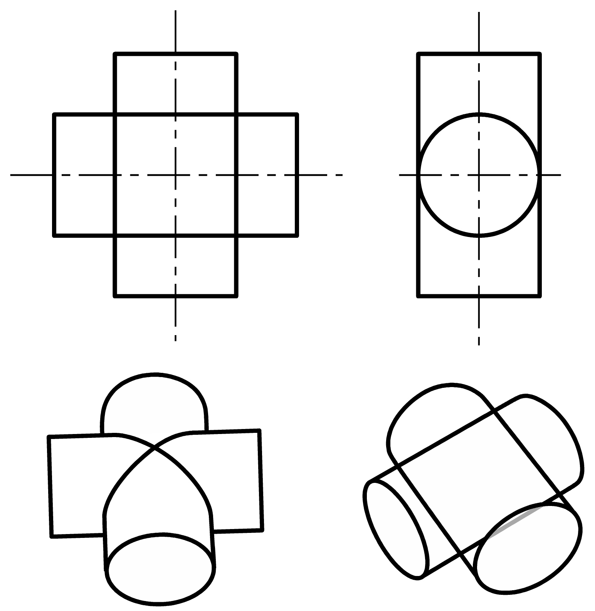
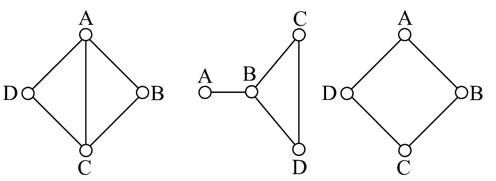

Play an implementation of the absorbing physical puzzle L'Aventurier!
Could you calculate how many distinct possible game states (before exiting) are there in
the Level-1 layout?
What is the invariant of the puzzle?
A person wants to create a gas tank in the shape of a cross formed from the union of two circular cylinders. The cylinders each have radius r and length 4r, with r=3. The two cylinders intersect perpendicularly at the midpoint of the cylindrical axes. Find the volume of the tank.
Question 2: The tank is constructed by welding pieces of metal together. What is the shape of the its net?
SolutionHow many ways are there to colour the vertices A to D in the following networks? Vertices can be coloured using n colours, and vertices connected by a line may not be of the same colour. 
SolutionWhen it comes to choosing PIN numbers for our bank cards or our phones, the most popular numbers are the obvious ones, such as 1234, 1111, 1212 etc.
You and a friend are discussing how you choose four-digit PINs. You establish that neither of you would ever use the digit 0.
“I like to choose four different random digits,” you say.
“I like to choose three different random digits,” they reply, “so one of the digits is used twice.”
Which strategy gives a larger pool of possible four-digit PINs?
SolutionGiven a bag of ten $10 coins and ten $3 coins, how many different sums can you make up using one or more of such coins?
E.g. $37 can be made up using nine $3 coins and one $10 coin, while $130 can be made up using all twenty coins.
SolutionFor a set of n numbers `x_1 ... x_n`:
Arithmetic Mean (AM) = `(x_1 + x_2 + x_3 ... + x_n)/n`
Geometric Mean (GM) = `root(n)(x_1 xx x_2 xx x_3 xx ...x_n)`
One of the most well-known inequalities states that
AM is always ≥ GM